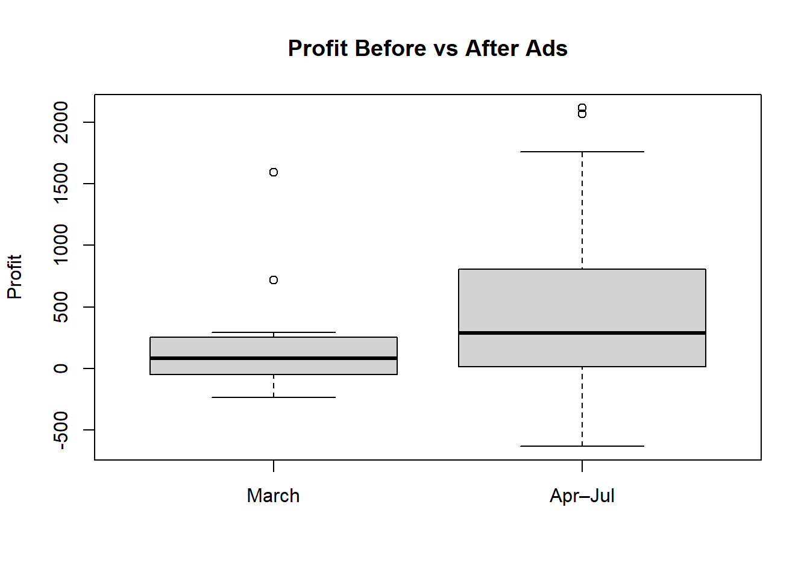

Registered S3 method overwritten by 'mosaic':
method from
fortify.SpatialPolygonsDataFrame ggplot2
The 'mosaic' package masks several functions from core packages in order to add
additional features. The original behavior of these functions should not be affected by this.
Attaching package: 'mosaic'
The following objects are masked from 'package:dplyr':
count, do, tally
The following object is masked from 'package:Matrix':
mean
The following object is masked from 'package:ggplot2':
stat
The following objects are masked from 'package:stats':
binom.test, cor, cor.test, cov, fivenum, IQR, median, prop.test,
quantile, sd, t.test, var
The following objects are masked from 'package:base':
max, mean, min, prod, range, sample, sum
Attaching package: 'ggthemes'
The following object is masked from 'package:mosaic':
theme_map
library(scales)
Attaching package: 'scales'
The following object is masked from 'package:purrr':
discard
The following object is masked from 'package:readr':
col_factor
The following object is masked from 'package:mosaic':
rescale
library(car)
Loading required package: carData
Attaching package: 'car'
The following object is masked from 'package:purrr':
some
The following objects are masked from 'package:mosaic':
deltaMethod, logit
The following object is masked from 'package:dplyr':
recode
data <-read.csv("C://Users//Alex//Documents//GitHub//IntStats//Statistics-Notebook-master//Analyses//campaign_data.csv")datatime <-ymd_hms(data$Date)data$Date <-as_date(datatime)data <- data %>%mutate(Month =format(floor_date(Date, "month"), "%Y-%m"))data <- data %>%mutate(Month =month(Date, label =TRUE, abbr =FALSE))
Background
I asked ChatGPT to roleplay as the business owner of an online store that sells home fitness equipment. The “owner”, as one of the tasks, asked if “our ads are even working”, after implementing Google and Facebook ads on March 20, 2025. Afterwards, I was given the data of the following data:
Date
Profit
Channel (Google or Facebook)
Campaign ID/Name
Clicks
Impressions
Spend
CPA (Cost Per Acquisition)
ROAS (Return on Ad Spend)
Question and Hypothesis
Since we are comparing the profits of “before” vs “after” March 20, 2025, we’ll have to perform a two
View(data)
Analysis
ggplot(data, aes(x = Date, y = Profit)) +geom_line() +scale_y_continuous(breaks =seq(-500, 2000, 150),labels =dollar_format(prefix ="$") ) +geom_vline(xintercept =as.numeric(as.Date("2025-03-20")), color ="red", linetype ="dashed") +annotate("text", x =as.Date("2025-03-20"), y =1900, label ="Ad Stimulus", color ="red", angle =90, vjust =-0.5, hjust =0.8)
boxplot(before_ads, after_ads,names =c("March", "Apr–Jul"),ylab ="Profit", main ="Profit Before vs After Ads")

t.test(before_ads, after_ads)
Welch Two Sample t-test
data: before_ads and after_ads
t = -1.3064, df = 15.314, p-value = 0.2107
alternative hypothesis: true difference in means is not equal to 0
95 percent confidence interval:
-539.4473 129.0168
sample estimates:
mean of x mean of y
223.4300 428.6452